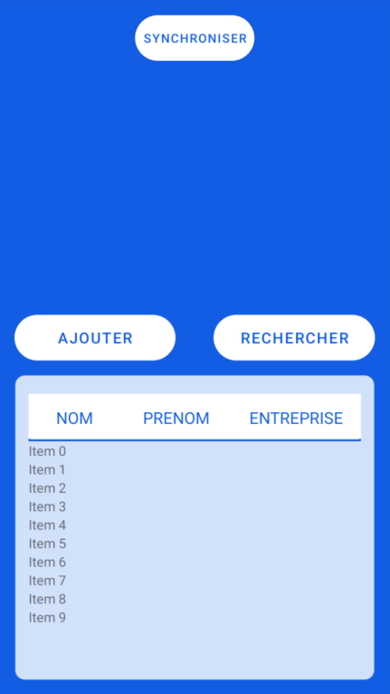
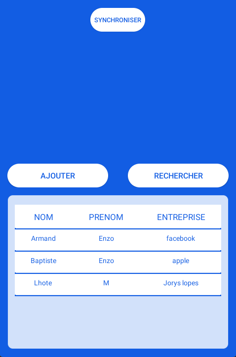
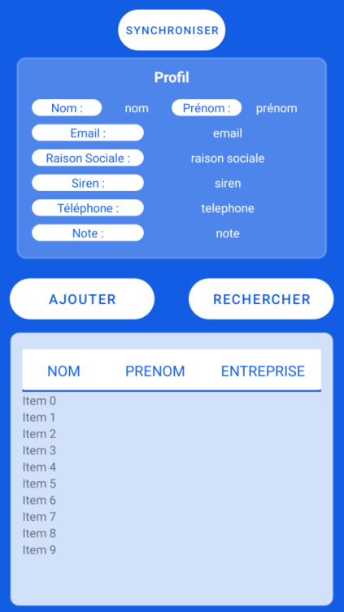
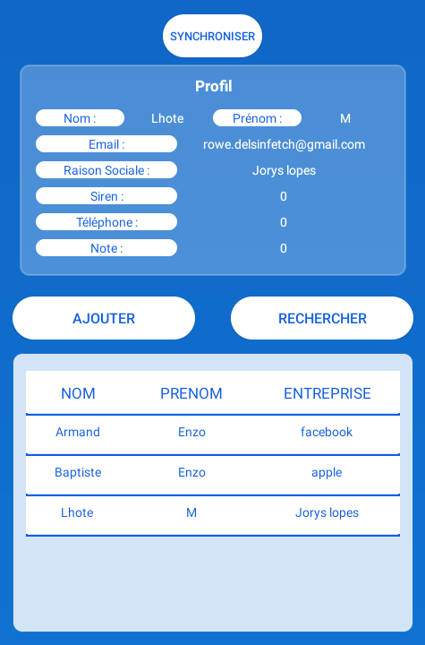
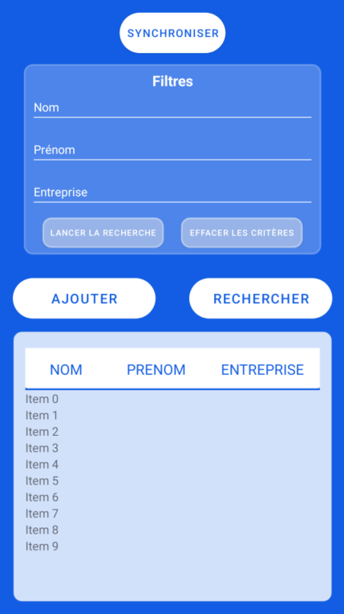

Menu Activity
Introduction
La classe MenuActivity permet d'avoir un aperçu des prospects avec une recherche par rapport à ceux-ci, ainsi que leurs informations en détails.
Elle permet aussi de synchroniser les données avec le serveur et d'accéder à la page d'ajout de prospect.
Le FrontEnd, layout principal qui lui est lié est intitulé activity_menu.
Aperçu depuis Android Studio avant lancement :

Affichage des prospects et leurs détails
Affichage
On affiche les prospects sur le Menu dans la partie basse en passant par un tableau qui contient un recycler view mais c'est bien plus complexe !
Pour que cela fonctionne nous avons besoin du layout item_layout et de la classe ShowProspectAdaptater.
Le xml item_layout contient uniquement une table avec une ligne et 3 colonnes représentés par des TextView, grâce à ShowProspectAdaptater
nous allons pouvoir générer plusieurs lignes ayant pour design le xml cité juste avant (le design est simple, on a juste une bordure bottom bleu depuis un
background drawable).
La classe ShowProspectAdaptater est composée de 4 méthodes :
public class ViewHolder extends RecyclerView.ViewHolder{
TextView nom_prospect, prenom_prospect, entreprise_prospect;
TableRow row_prospect;
public ViewHolder(@NonNull View itemView){
super(itemView);
nom_prospect = itemView.findViewById(R.id.nom_prospect);
prenom_prospect = itemView.findViewById(R.id.prenom_prospect);
entreprise_prospect = itemView.findViewById(R.id.entreprise_prospect);
row_prospect = itemView.findViewById(R.id.tableRowProspect);
}
}
La première permet de mettre en place un ViewHolder qui hérite de RecyclerView.ViewHolder, on y appel ici les id des colonnes ainsi que de la ligne disponible
dans le xml item_layout.
@Override
public int getItemCount() {
if(prospectList != null){
if (prospectList.size()<=5){
return prospectList.size();
}else{
return 5;
}
}else{
return 0;
}
}
La seconde va rechercher la taille de la liste de prospect c'est-à-dire combien de prospect sont existants, si le tableau prospectList est null alors on va récupérer la valeur 0, si on en a moins ou 5 on en récupére la taille de la liste et sinon dans le cas où on en a plus de 5, on récupére 5.
@Override
public void onBindViewHolder(@NonNull ShowProspectAdaptater.ViewHolder holder, int position) {
if (prospectList != null && prospectList.size() > 0){
Prospect model = prospectList.get(position);
holder.nom_prospect.setText(model.getNom());
holder.prenom_prospect.setText(model.getPrenom());
holder.entreprise_prospect.setText(model.getRaisonSocial());
holder.row_prospect.setOnClickListener(new View.OnClickListener() {
@Override
public void onClick(View v) {
holder.row_prospect.setBackgroundColor(Color.rgb(180,180,180));
interfaceClickable.setClick(position, prospectList);
}
});
}else{
return;
}
}
La troisième quant à elle prend en paramètre deux choses, le ViewHolder créer auparavant ainsi qu'une position. On va vérifier si la taille du tableau prospectList n'est pas null et si il est supérieur à 0 sinon on ne retourne rien. Puis on créer un prospect "model" qui va prendre les informations du prospect dans le tableau qui est à la position prise en paramètre pour ensuite stocké son nom, prénom, sa raison sociale dans des holders.
(Nous reviendrons sur le setOnClickListener dans la partie détail)
public ViewHolder onCreateViewHolder(@NonNull ViewGroup parent, int viewType) {
View view = LayoutInflater.from(context).inflate(R.layout.item_layout,parent,false);
return new ViewHolder(view);
}
Finalement un onCreateViewHolder avec en paramètre parent et viewType va retourné le ViewHoler contenant la vue.
Ce qui va permettre en dernier l'affichage est disponible dans la classe MenuActivity, une méthode setRecyclerView va mettre les prospects
avec un model qui est la création de la classe ShowProspectAdaptater.
private void setRecyclerView(ArrayList<Prospect> lesProspects) {
recycler_view.setHasFixedSize(true);
recycler_view.setLayoutManager(new LinearLayoutManager(this));
model = new ShowProspectAdaptater(this, lesProspects, interfaceClickable);
recycler_view.setAdapter(model);
}
En résultat par exemple avec 3 prospect, nous obtenons ceci :

Détails
Pour ce qui est de leurs détails, dans le xml correspondant à la page menu : activity_menu nous voyons au début de la page un grand carré bleu faisant la page vide,
mais en faite il y a à cette place un LinearLayout caché grâce à la ligne android:visibility="gone" celui-ci a l'id : infosProspectLayout.
Il contient ceci :

Dès le début de la classe MenuActivity, dans le onCreate, nous avons une interface clicquable.
interfaceClickable = new onClickInterface() {
TextView nomInfos = (TextView) findViewById(R.id.nomProspect);
TextView prenomInfos = (TextView) findViewById(R.id.prenomProspect);
TextView raisonSocialeInfos = (TextView) findViewById(R.id.raisonSocialeProspect);
TextView sirenInfos = (TextView) findViewById(R.id.sirenProspect);
TextView mailInfos = (TextView) findViewById(R.id.mailProspect);
TextView telephoneInfos = (TextView) findViewById(R.id.telephoneProspect);
TextView noteInfos = (TextView) findViewById(R.id.noteProspect);
boolean visible;
@Override
public void setClick(int position, List<Prospect> lesProspects) {
Prospect prospect = lesProspects.get(position);
nomInfos.setText(prospect.getNom());
prenomInfos.setText(prospect.getPrenom());
raisonSocialeInfos.setText(prospect.getRaisonSocial());
sirenInfos.setText(String.valueOf(prospect.getSiret()));
mailInfos.setText(prospect.getMail());
telephoneInfos.setText(prospect.getTel());
noteInfos.setText(String.valueOf(prospect.getNotes()));
if(infosProspectLayout.getVisibility() == View.GONE){
visible = false;
}else{
visible = true;
}
filtresLayout.setVisibility(View.GONE);
TransitionManager.beginDelayedTransition(infosProspectLayout);
visible = !visible;
infosProspectLayout.setVisibility(visible ? View.VISIBLE: View.GONE);
}
};
Nous créons ici une interface clicquable c'est-à-dire que nous utilisons une interface nommé onClickInterface contenant uniquement ceci :
public interface onClickInterface {
void setClick(int position, List<Prospect> lesProspects);
}
Elle a ici différent TextView correspondant aux informations détaillées des prospects ainsi qu'un booléen "visible" sans valeur.
Dès que l'on va cliquer sur celle-ci, nous allons obtenir la position du prospect dans la liste (tableau) lesProspects pour ajouter ensuite à
l'intérieur des TextView les informations d'un prospect.
Le infosProspectLayout alors va avoir sa visibilité modifié, il va apparaitre ou disparaitre en fonction de si il est ou non présent, nous parlons
ici aussi d'un filtresLayout mais cela fait partie de la recherche de prospect.
Nous avions vu auparavant ce code ci-dessous dans la classe ShowProspectAdaptater.
holder.row_prospect.setOnClickListener(new View.OnClickListener() {
@Override
public void onClick(View v) {
interfaceClickable.setClick(position, prospectList);
}
});
Il met en place le fait que ce soit sur les lignes du tableau que nous allons cliquer grâce à l'interface cliquable.
Exemple de clic sur un prospect (le Siren n'est pas correct, le prospect avait été fait avant les règles sur l'ajout d'un prospect) :

Recherche de prospect
Hormis la partie infosProspectLayout cachée, une autre l'est aussi, c'est filtresLayout, elle ressemble à ça :

Elle va permettre de faire une recherche qui va actualiser la liste des prospects et dont affiché que ce que l'utilisateur veut. La première méthode est un événement de bouton, le bouton de la page d'accueil "Rechercher" le provoque.
public View.OnClickListener eventBtnRechercherVisibility = new View.OnClickListener() {
boolean visible;
@Override
public void onClick(View v) {
infosProspectLayout.setVisibility(View.GONE);
TransitionManager.beginDelayedTransition(filtresLayout);
visible = !visible;
filtresLayout.setVisibility(visible ? View.VISIBLE : View.GONE);
}
};
Il permet de changer la visibilité du filtresLayout en visible ou non si l'on reclick dessus.
Ensuite il est possible d'écrire trois critère, le nom, le prénom et la raison sociale.
On peut écrire quelque chose dans un seul ou même dans les trois et dès que l'on va appuyer sur le bouton Lancer la Recherche la méthode suivant va se lancer :
public View.OnClickListener eventBtnRechercher = new View.OnClickListener() {
@Override
public void onClick(View v) {
ArrayList<Prospect> lesProspects = dataBase.getProspectBdd().getProspects(nomFiltre.getText().toString(),
prenomFiltre.getText().toString(),
entrepriseFiltre.getText().toString(),
true);
setRecyclerView(lesProspects);
}
};
ProspectBDD.
/**
* Récupère un tableau de prospects
*
* @param nom String ou null : le nom du prospect
* @param prenom String ou null : le prenom du prospect
* @param raisonSocial String ou null : la raison social de l'entreprise
* @param isUpdate boolean : true si on veux tous les prospects correspondant aux autres critères ou false si on souhaite que les prospects non synchroniser avec le serveur
* @return ArrayLsit<Prospect> ou null : la liste des prorpects correspondant aux critères ou null s'il n'existe aucun prospect correspondant
*/
public ArrayList<Prospect> getProspects(String nom, String prenom, String raisonSocial, boolean isUpdate) {
open();
String[] params = new String[(nom != null ? 1 : 0) +
(prenom != null ? 1 : 0) +
(raisonSocial != null ? 1 : 0)];
int paramIndex = 0;
String where = "";
if (nom != null) {
where = NOM_COL + " LIKE ?";
params[paramIndex++] = nom + "%";
}
if (prenom != null) {
if (!where.equals(""))
where = where + " AND ";
where = where + PRENOM_COL + " LIKE ?";
params[paramIndex++] = prenom + "%";
}
if (raisonSocial != null) {
if (!where.equals(""))
where = where + " AND ";
where = where + RAISON_SOCIAL_COL + " LIKE ?";
params[paramIndex++] = raisonSocial + "%";
}
if (!isUpdate) {
if (!where.equals(""))
where = where + " AND ";
where = where + IS_UPDATE_COL + " = 0";
}
Cursor c = getBdd().query(getTableName(), new String[]{NOM_COL, PRENOM_COL, TEL_COL, MAIL_COL, NOTES_COL, SIRET_COL, RAISON_SOCIAL_COL, IS_UPDATE_COL}, where, params, null, null, null);
if (c == null || c.getCount() == 0) {
return null;
}
c.moveToFirst();
Prospect leProspect = cursorToProspect(c);
ArrayList<Prospect> lesProspects = new ArrayList<>();
lesProspects.add(leProspect);
if (c.getCount() > 1) {
for (int i = 1; i < c.getCount(); i++) {
c.moveToNext();
lesProspects.add(cursorToProspect(c));
}
}
c.close();
close();
return lesProspects;
}
La méthode va nous permettre de faire des recherches SQL par rapport aux entrées de l'utilisateur. Nous nous retrouvons finalement avec le tableau affichant les prospects avec les nouveaux correspondant aux recherches.
Malgré tout si nous voulosn annuler les filtres alors il suffit d'appuyer sur le bouton Effacer les critères.
public void eventBtnClearFiltres(View v) {
nomFiltre.setText("");
prenomFiltre.setText("");
entrepriseFiltre.setText("");
ArrayList<Prospect> lesProspects = dataBase.getProspectBdd().getProspects(null, null, null, true);
setRecyclerView(lesProspects);
}
Il remet le contenu des EditText vide et rétabli la liste lesProspects avec les informations de base.
Synchronisation avec le serveur externe
Ce diagramme de séquence représente la récupération des prospects depuis l'api au format json et de l'ajout en base de données local. Et dans un second temps la récupération des prospects en base de données SQLite puis du formatage en json pour l'envoi au serveur.
sequenceDiagram
actor Commercial
Commercial ->>+ Activity Menu: bouton synchroniser
Activity Menu ->>+ APIBdd: callWebService(getAllProspects)
APIBdd -->>- Activity Menu: JSONArray json
loop updateBddProspects(json)
Activity Menu -)+ Prospect: create with json data
Prospect -->>- Activity Menu: object
Activity Menu ->>+ DAO: add Prospect
DAO -->>- Activity Menu: resultat insertion
end
Activity Menu ->>+ DAO: getProspect
DAO -->>- Activity Menu: ArrayList<Prospect>
Activity Menu ->>+ APIBdd: createJsonProspects(lesProspects)
APIBdd -->>- Activity Menu: JSONArray jsonProspects
Activity Menu ->> APIBdd: postJsonProspect("InsertProspect", jsonProspects)
Activity Menu -->>- Commercial: boiteMessage(resultApi)L'évènement du bouton est déclaré dans eventBtnSynchroniser.
La date de mise à jour permet de récupérer les prospects créer à une date ultérieure à celle de la mise à jour et donc limiter le nombres d'informations transmis en bande passante.
Pour le POST : application envoie seulement les prospects pour lesquelles la valeur isupdate de la colonne est à false, il s'agit d'une valeur boolean pour savoir s'il le prospect est déjà synchronisé avec le serveur externe.
public View.OnClickListener eventBtnSynchroniser = new View.OnClickListener() {
@Override
public void onClick(View v) {
loading.startLoadingDialog();
SimpleDateFormat formatter = new SimpleDateFormat("yyyy-MM-dd HH:mm:ss");
formatter.setTimeZone(TimeZone.getTimeZone("UTC"));
Date date = new Date();
String dateMiseAjour = formatter.format(date);
ApiBdd api = new ApiBdd();
api.callWebService("getAllProspects.php?date="+lEmployee.getDateMiseAjour().replace(":","!"));
JSONArray json = api.getJsonData();
updateBddProspects(json);
ArrayList<Prospect> lesProspects = dataBase.getProspectBdd().getProspects(null, null, null, false);//getAllProspects();
if(lesProspects != null){
JSONArray jsonProspects = api.createJsonProspects(lesProspects);
api.postJsonProspect("insertProspect.php?date="+lEmployee.getDateMiseAjour().replace(":","!"), jsonProspects.toString());
}
lEmployee.setDateMiseAjour(dateMiseAjour);
dataBase.getEmployeeBdd().update(lEmployee);
loading.dismissDialog();
boiteMessage(api.getResult());
setRecyclerView(dataBase.getProspectBdd().getProspects(null,null,null, true));
}
};
Pour obtenir le bon format des données en json et mettre à jour le fichier SQLite la méthode updateBddProspects décompose l'objet et insert en bdd les prospects.
Pour créer le format de données à envoyer on utilise la méthode createJsonProspects(ArrayList<Prospect> lesProspects).
/**
* Formate une liste de prospect en json
*
* @param lesProspects ArrayList : la liste de prospects
* @return JsonArray : les prospects au format json
*/
public JSONArray createJsonProspects(ArrayList<Prospect> lesProspects) {
//Creating a JSONObject object
JSONArray jsonArray = new JSONArray();
try {
for (Prospect prospect : lesProspects) {
JSONObject jsonObject = new JSONObject();
//Inserting key-value pairs into the json object
jsonObject.put("id", "default");
jsonObject.put("nom", prospect.getNom());
jsonObject.put("prenom", prospect.getPrenom());
jsonObject.put("mail", prospect.getMail());
jsonObject.put("tel", prospect.getTel());
jsonObject.put("note", prospect.getNotes());
jsonObject.put("siret", prospect.getSiret());
jsonObject.put("raisonsocial", prospect.getRaisonSocial());
jsonArray.put(jsonObject);
}
} catch (Exception e) {
e.printStackTrace();
}
return jsonArray;
}
Le bouton Ajouter change l'activité vers AjoutProspectActivity